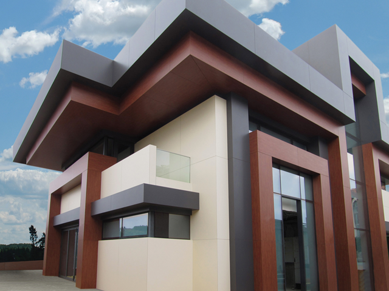
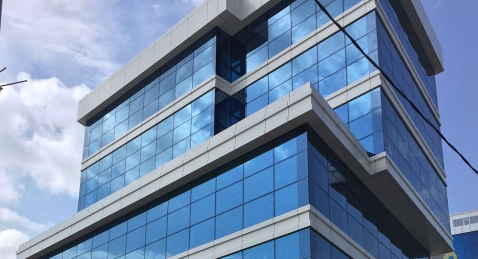
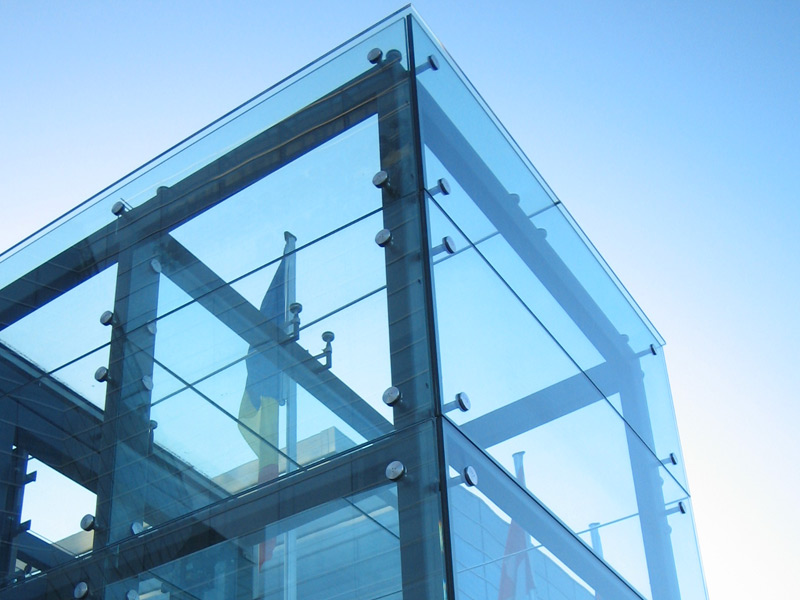
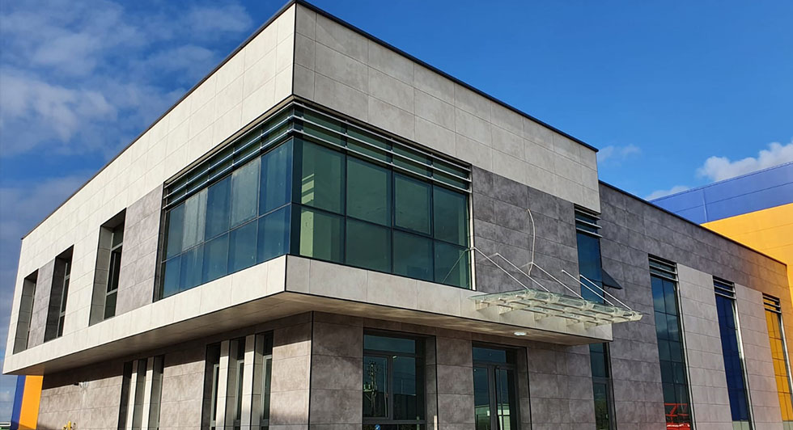
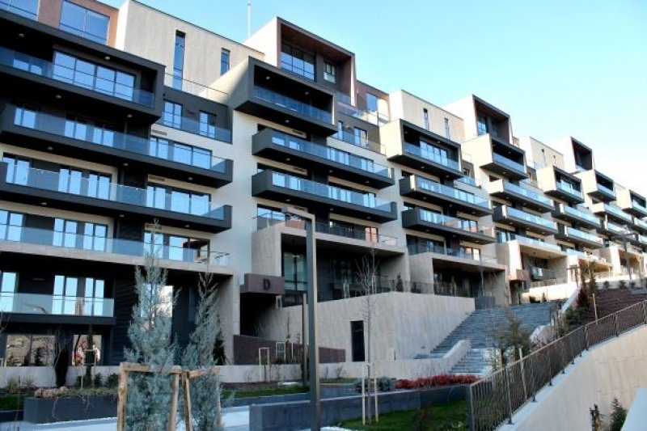
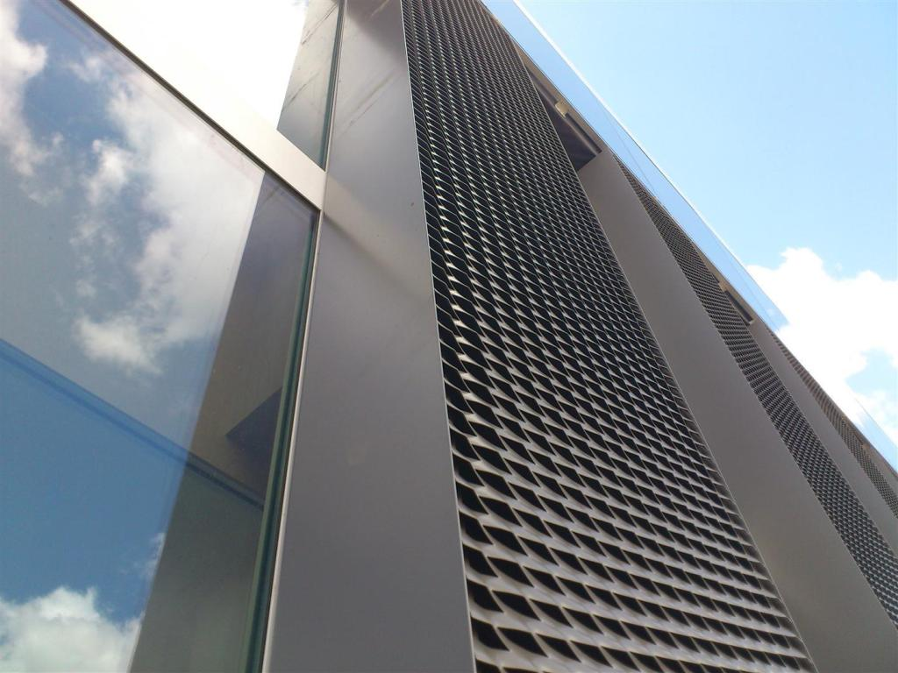
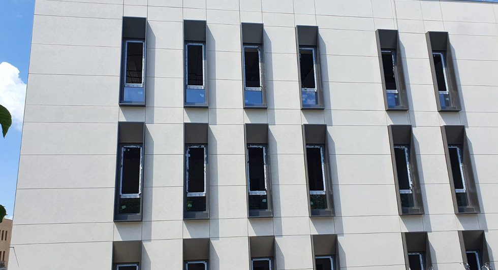
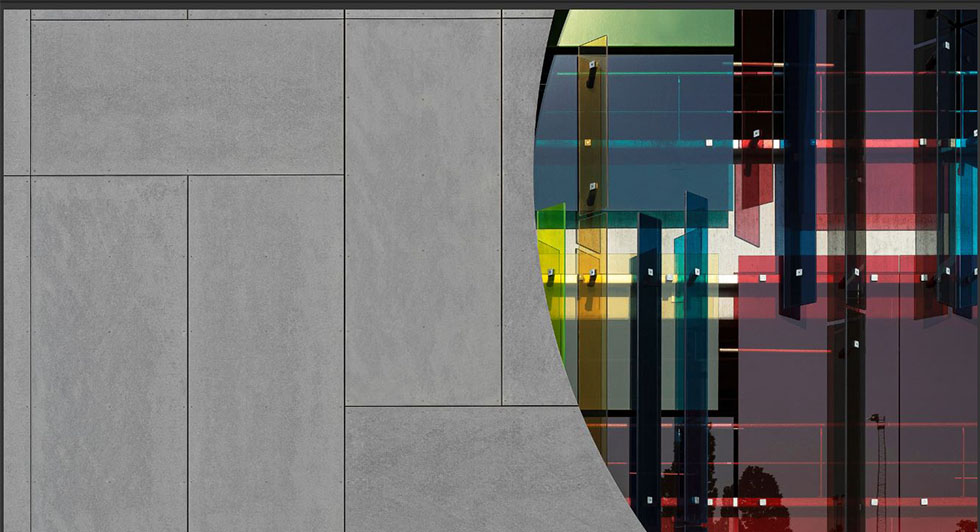

Modern ve Güvenli Cephe Sistemleri
20 yıllık tecrübemizle, modern ve güvenli cephe sistemleri konusunda uzman çözümler sunuyoruz.
20+
Yıllık Tecrübe
150+
Tamamlanan Proje
Projelerimiz
Modern Villa Projesi
Lüks ve modern tasarım anlayışıyla inşa edilen villa projesi.
DetaylarProje Özellikleri
- 500 m² kapalı alan
- Akıllı ev otomasyonu
- Yüksek ısı ve ses yalıtımı
- Özel peyzaj ve havuz
Modern mimari çizgilerle tasarlanan bu villa projesi, konfor ve estetiği bir arada sunar. Geniş yaşam alanları ve fonksiyonel iç mekanlarıyla öne çıkar.
Rezidans Kompleksi
Şehir merkezinde yaşam konforu sunan rezidans projesi.
DetaylarProje Özellikleri
- 120 dairelik modern kompleks
- Kapalı otopark ve güvenlik
- Sosyal alanlar ve spor salonu
- Enerji verimli cephe sistemleri
Şehrin merkezinde konumlanan bu rezidans projesi, sakinlerine konforlu ve güvenli bir yaşam alanı sunar. Modern cephe sistemleriyle enerji tasarrufu sağlar.
İş Merkezi
Modern iş dünyasının ihtiyaçlarına uygun tasarlanan iş merkezi.
DetaylarProje Özellikleri
- 10.000 m² ofis alanı
- Yüksek güvenlikli girişler
- Çevre dostu bina sertifikası
- Geniş toplantı ve konferans salonları
İş dünyasının tüm ihtiyaçlarına cevap veren bu iş merkezi, modern altyapısı ve çevreci yaklaşımıyla öne çıkar.
Hizmet Alanlarımız
Alüminyum Kompozit
Modern binaların dış cephelerinde kullanılan, dayanıklı ve estetik alüminyum kompozit panel sistemleri.
Alüminyum Kompozit Kaplama Sistemleri
Alüminyum kompozit kaplama sistemleri, modern mimarinin vazgeçilmez bir parçası haline gelmiştir. Bu sistemler, iki alüminyum levha arasına yerleştirilmiş polietilen dolgu malzemesi sayesinde hem hafif hem de dayanıklı bir yapıya sahiptir.
Geniş renk ve doku seçenekleriyle mimari projelerinize estetik çözümler sunan alüminyum kompozit paneller, aynı zamanda:
- Yüksek yangın dayanımı
- Mükemmel ısı ve ses yalıtımı
- Kolay montaj ve bakım
- Uzun ömürlü kullanım
- Çevre dostu yapı
özellikleriyle öne çıkmaktadır. Özellikle yüksek binalar, iş merkezleri ve modern ticari yapılarda tercih edilen bu sistemler, binanızın değerini artırırken enerji verimliliğini de maksimum seviyede tutar.
Cam Cephe
Strüktürel Cam Cephe Sistemleri ve Silikon Cephe Sistemleri ile modern ve estetik çözümler.
Strüktürel Cam Cephe Sistemleri
Silikon Cephe Sistemleri
Camın sadeliğini ve aseletini vurgulayan silikon giydirme sisteminde ısı camlar cepheye özel bir şekilde yapıştırıldıkları kaset profilleriyle tutturulmaktadır. Silikon Cephe Kaplama Sistemi üç noktadaki fitil emniyeti ile kesin bir sızdırmazlığı garanti etmektedir. Montajı kolay ve hızlı olan Silikon Cephe Kaplama Sistemi montaj sonrasında kolay bakım ve temizlik kolaylığıyla müşterilerilerimizin beğenisini kazanmaktadır.
Strüktürel Silikon Kaplama Sisteminde dıştan baktığımızda alüminyum profil görülmeyip, cam derzlerinde 15 mm genişliğinde ve 15 mm derinliğinde fuga bulunmaktadır. Cam paneller arasındaki sızdırmazlık çift EPDM fitil ile sağlandığından, panellerin arasına sızdırmazlık silikonu çekilmez. Böylece cam panellerin arasında gölge oluşması engellenir. İstendiğinde seçilen herhangi bir cam panel (dışarıdan hangisinin açılır olduğu belli olmaksızın ) gizli kanat haline getirilebilir. Cam ve alüminyum panel arasında silikon, çift camda ise iki cam arasında komponentli silikon kullanılmaktadır. Silikon çekilmesi işlemleri esnasında silikon firmasının kalite kontrol test prosedürleri çerçevesinde prosesler kontrol altında tutulmaktadır.
Strüktürel Silikon Cephe Kaplama Sistemleri ile dış kapak kullanılmaması yüzey görünümünün düz algılanmasına sebep olmaktadır. Düşey profillerin zengin çeşitliliği, gerekli statiğe, tasarımcıların ihtiyaçlarına ve alışılmışın dışına çıkılmasına doğrudan cevap verebilmektedir.
Düşey ve yatay profiller iç görünüşte hem yüz veya farklı derinlikte olabilir.
Spider Cephe
Görsel estetiği ön planda tutan, noktasal bağlantılı cam cephe sistemleri.
Spider Cephe Sistemleri
Spider cephe sistemleri, modern mimarinin en etkileyici çözümlerinden biridir. Bu sistemler, cam panellerin noktasal bağlantılarla tutturulduğu, görsel olarak çarpıcı ve minimal bir görünüm sunan özel cephe uygulamalarıdır.
Spider cephe sistemlerinin öne çıkan özellikleri:
- Maksimum şeffaflık ve doğal ışık geçirgenliği
- Minimal görünüm ve estetik tasarım
- Yüksek mekanik dayanıklılık
- Kolay bakım ve temizlik imkanı
- Esnek tasarım seçenekleri
Bu sistemler özellikle:
- Lüks rezidans projeleri
- Prestijli ofis binaları
- Alışveriş merkezleri
- Otel ve restoranlar
- Kültür ve sanat merkezleri
gibi yapılarda tercih edilmektedir. Spider cephe sistemleri, binanızın dış görünümüne modern ve sofistike bir hava katarken, iç mekanlarda maksimum doğal ışık ve görüş açısı sağlar.
Seramik Esaslı Sistemler
Yüksek dayanıklılık ve estetik sunan seramik kaplama sistemleri.
Seramik Esaslı Sistemler
Granit ve Seramik kaplamalar, çok alternatifli renk seçenekleri ile her türlü mimari tasarıma uygunluk göstermektedir. Sistemde tercih edilen seramik veya granit malzeme seçimi yapıldıktan sonra binanın sağır cephelerinde ısı izolasyonu sağlanarak, sisteme ait alt taşıyıcı, alüminyum konstrüksiyonlarla klipsli, kanallı ya da yapıştırmalı olarak yapıya entegre edilir. Bu malzemeler leke tutmazlar ve atmosferik değişikliklerden etkilenmezler, ısı dayanımları da oldukça yüksektir.
Aqua Panel Giydirme
Su yalıtımı ve estetik görünümü bir arada sunan panel sistemleri.
Aqua Panel Giydirme Sistemleri
Aqua Panel giydirme sistemleri, özellikle su ile temas halinde olan yapılar için özel olarak tasarlanmış, hem estetik hem de fonksiyonel çözümler sunan modern cephe sistemleridir. Bu sistemler, su geçirmezlik özelliği sayesinde havuz, spa, su parkı gibi nemli ortamlarda güvenle kullanılabilir.
Aqua Panel sistemlerinin avantajları:
- Tam su geçirmezlik özelliği
- Yüksek dayanıklılık ve uzun ömür
- Kolay temizlenebilir yüzey
- Geniş renk ve doku seçenekleri
- Hızlı montaj imkanı
Kullanım alanları:
- Yüzme havuzları ve su parkları
- SPA ve wellness merkezleri
- Su sporları tesisleri
- Deniz kenarı yapılar
- Nemli ortamlar için özel tasarım projeler
Aqua Panel sistemleri, su ile temas eden yapılarda maksimum dayanıklılık ve estetik görünüm sağlarken, bakım maliyetlerini minimum seviyede tutar. Özel kaplama teknolojisi sayesinde UV ışınlarına ve kimyasal etkilere karşı da yüksek direnç gösterir.
Meş Sistemleri
Özel tasarım ve uygulama gerektiren kompleks cephe sistemleri.
Meş Sistemleri
Meş sistemleri, modern mimarinin karmaşık ve özel tasarım gerektiren projeleri için geliştirilmiş, yüksek performanslı cephe çözümleridir. Bu sistemler, özellikle büyük ölçekli projelerde ve özel tasarım gerektiren yapılarda tercih edilmektedir.
Meş sistemlerinin özellikleri:
- Özel tasarım ve üretim imkanı
- Yüksek yapısal dayanıklılık
- Kompleks geometrilerde uygulama kolaylığı
- Geniş açıklıklı sistemler
- Özel aksesuar ve bağlantı çözümleri
Kullanım alanları:
- Yüksek binalar ve gökdelenler
- Kültür ve kongre merkezleri
- Havalimanı terminal binaları
- Özel tasarım ticari yapılar
- Prestijli rezidans projeleri
Meş sistemleri, projenizin özel gereksinimlerine göre tasarlanabilir ve üretilebilir. Bu sayede mimari vizyonunuzu tam olarak yansıtan, yüksek performanslı cephe çözümleri elde edebilirsiniz. Sistem, özel üretim profiller, bağlantı elemanları ve aksesuarlarla desteklenerek, projenizin teknik ve estetik gereksinimlerini karşılar.
Alüminyum Doğrama
Modern ve dayanıklı alüminyum doğrama sistemleri ile yaşam alanlarınızı yenileyin.
Alüminyum Doğrama Sistemleri
Mimari istekler doğrultusunda, doğrama sistemleri sabit, çift, tek açılır kanatlı, iç, dış, pivot, katlanır, yana kayar, çekme sürgülü, kaldırma sürgülü, eloksal ve boyalı olarak tercih edilebilir. Kanat ve kasa profilleri arasındaki izolasyon, EPDM fitiller ile sağlanır. Sistemde kullanılacak olan profiller ince ve kalın kesitli olarak uygulama bölgesi ve koşullarına göre tercih edilir. Bu kalınlıklar, açılır sistemler için taban genişlikleri 40-80mm aralığında, sürgülü sistemler için 80-300mm aralığında değişebilir.
Sistemler, yalıtımsız ya da özel dizayn edilmiş ısı bariyerleri ile yalıtılmak sureti ile profil yüzeyinde oluşabilecek yoğunlaşmalar engellenmektedir. Bu bariyerler sayesinde alüminyum iki elemanı iç ve dışa bakan profiller birbirlerinden ayrılarak maksimum ısı izolasyonu elde edilir. Mimari, coğrafya, yapının bulunduğu yer ve özelliklere göre doğramalara 4-60mm'ye kadar cam, levha, panel vb. elemanlar monte edilebilir.
Fibercement Sistemler
Hafif ve dayanıklı fibercement cephe kaplama sistemleri.
Fibercement Sistemler
İnsanın en temel gereksinimlerinden biri de barınma ihtiyacıdır. Başlangıçta sadece korunma içgüdüsüyle hareket eden insanoğlu ilerleyen süreçlerde içinde kaldığı yapının güvenliğine, sağlamlığına, rahatlığına, estetik ve konforuna daha çok önem vermeye başlamıştır. Geçen yüzyıllar; insanoğlunun gelişimini sağladıkça, barındıkları yapıların da gelişim ve değişimini hızlandırmıştır. Taş ve betonarme yapılardan daha hafif ve sağlam çelik konstrüksiyon yapılara doğru değişim süreci devam etmektedir.
Yapı sistemi ve kültürü değiştikçe, yapı da kullanılan malzemeler ve üretim tarzları da bu değişime adapte olmak için farklılaşmakta ve gelişmektedir. Kolay kurulabilen, hızlı ve ekonomik çözümler nihai tüketiciler için avantajlı olmaktadır.
İletişim Bilgileri
Yenişehir Mah. Reyhan Cad. No: 200 F Blok
İstanbul/Pendik